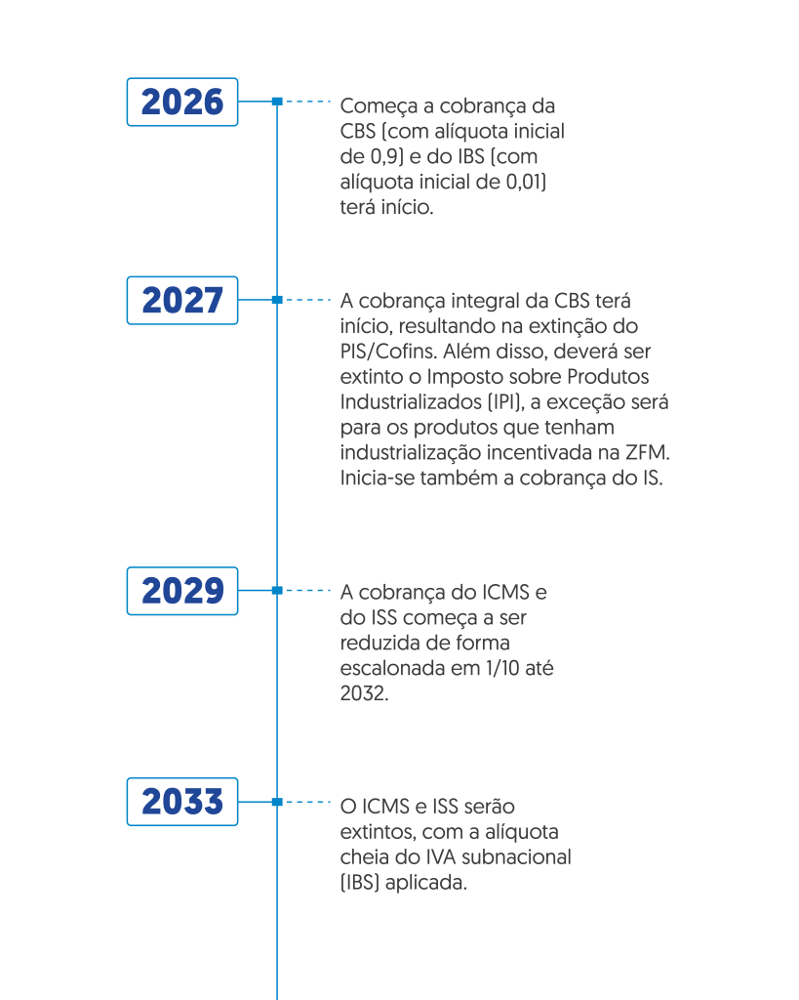

Entenda as Novas Regras Tributárias no Brasil
Nos últimos anos, a legislação tributária no Brasil passou por diversas alterações que afetam empresas e cidadãos. O objetivo dessas mudanças é tornar o sistema mais transparente, eficiente e alinhado às práticas internacionais.
Uma das mudanças mais impactantes foi a introdução do novo sistema de cálculo para o ICMS, que afeta diretamente o setor de comércio e serviços. Esse novo modelo busca uma divisão mais justa da arrecadação entre os estados e municípios, diminuindo as disparidades regionais.
Além disso, as regras para deduções de impostos de renda para pessoas físicas e jurídicas foram reformuladas, aumentando a transparência e simplificando o processo. A Receita Federal implementou novos mecanismos de controle que visam a redução de fraudes e sonegações fiscais.

Especialistas alertam que é essencial estar atualizado com essas mudanças para evitar penalidades e garantir uma gestão tributária eficiente. O impacto dessas reformas pode ser significativo, especialmente para pequenas e médias empresas, que agora têm novas obrigações a cumprir.